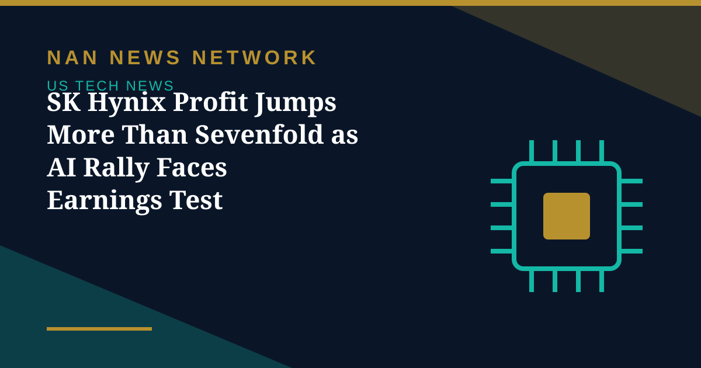

SK Hynix Profit Jumps More Than Sevenfold as AI Rally Faces Earnings Test

South Korean chipmaker SK Hynix reported a more than sevenfold rise in quarterly operating profit, giving the artificial intelligence trade a fresh jolt ahead of a decisive round of big-tech earnings. Shares in the company rose about 3% shortly after the open before paring gains to around 1.75% higher.
A rally waiting for proof
Asian markets rallied on the news, with South Korea's KOSPI jumping more than 3% and the MSCI Asia-Pacific index outside Japan up 0.85% in early trade. In the United States, the AI rally faces its next test after the market close on Wednesday, when Alphabet and Microsoft report earnings, with investors looking for evidence that heavy AI infrastructure spending is turning into sustainable revenue.
"While we're expecting strong results across the board, the focus is less about the actual earnings results than about whether the capex spending for AI growth will translate into sustainable revenue growth," said SWBC chief investment officer Chris Brigati. A series of AI funding announcements from Meta, SpaceX and Broadcom this week, plus Anthropic's IPO filing, has already breathed new life into the trade after a rocky stretch in which investors worried that AI investments might not pay off.
The earnings season is therefore doing double duty: it must justify both the chipmakers' valuations and the trillions being poured into data centres. SK Hynix cleared its bar. Whether the American giants do the same will set the tone for the rest of the week.
Sources: Free Malaysia Today, Malay Mail/AFP, October 28, 2026
More on US Tech News
- Judge Orders OpenAI to Disclose Apple Hiring Records in Talent Dispute
- Apple Unveils M6 MacBook Pro and iMac With Faster On-Device AI
- OpenAI Launches GPT-6.1 Terra With Lower API Prices
- Musk Says SpaceX Closed $40 Billion in GPU Debt and Warns of a Neocloud Shakeout
- AI Inference Prices Have Fallen as Much as 80 Percent Since June, Analysis Finds
- White House Names Jay Clayton as AI Czar to Lead 'Super Intelligence Force'
- SpaceX Q3 2026: $14.6 Billion Revenue as Starship Flight 15 Targets a Dual-Stage Catch
- US Orders DeepSeek Stripped From Federal Civilian Systems